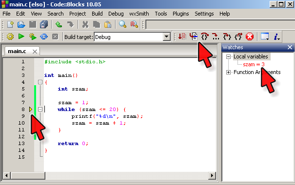

Labor, 3. hét: tömbök, nevezetes algoritmusok
Pohl László, Czirkos Zoltán · 2019.09.26.
Tömbök létrehozása és kezelése. Egyszerű algoritmusok megvalósítása tömbökön.
Felkészülés a laborra:
- A programozási tételekről szóló előadás átolvasása.
- A tömbökről szóló előadás megismerése.
- A fejlesztőkörnyezet indításáról tanultak átismétlése.
A megoldásokat ezen a héten is fel kell tölteni az adminisztrációs oldalon.
Ne felejtsd el, mit tanultál a projekt felépítéséről: melyik fájl a
forráskód: *.c, melyik a Code::Blocks konfigurációs fájlja: *.cbp, és melyik a futtatható program:
*.exe. Feltölteni forráskódokat kell ZIP fájlba csomagolva. Ezt az előző héten sokan elrontották.
Legyen n értéke 1.
Legyen a szorzat 1.
Ismétlés, amíg n≤8
A szorzat legyen szorzat × n.
Növeld n értékét eggyel.
Ismétlés eddig
Írd ki a szorzatot.
Figyelj, hogy sem a project nevében, sem az elérési útjában nem lehet sem szóköz, sem ékezetes betű! Másként a nyomkövetés nem fog működni.
Írj programot úgy, hogy az 1…8 számok szorzatát, vagyis a 8 faktoriálisát számolja ki! Mintának használd az oldalt látható pszeudokódot, és ne térj el attól a programod felépítésében! Tegyél a ciklus belsejébe egy olyan programsort is, amely kiírja a ciklusváltozó értékét, és a szorzatot tároló változó értékét is! 8 faktoriálisa 40320, ennyi kell legyen a végeredmény.
Megoldás
#include <stdio.h>
int main(void) {
int n = 1;
int szorzat = 1;
while (n <= 8) {
printf("szorzat: %d, n: %d\n", szorzat, n);
szorzat = szorzat*n;
n += 1;
}
printf("%d", szorzat);
return 0;
}Nyomkövetés
Ha kész, vedd ki most a kiírásokat, és csak a végeredmény megjelenítése szerepeljen a programban.
Próbáld ki a nyomkövető használatával is! A Code::Blocksban a nyomkövetést legegyszerűbben úgy tudod elindítani, ha arra a sorra állsz a kurzorral, ahol először meg szeretnéd a programot állítani, és megnyomod az F4-et (Debug/Run to cursor). Innentől a program az F7-tel léptethető soronként (Debug/Next line). A „Debug/Debug windows/Watches” menüponttal hívhatod elő az ablakot, amelyben a változók (Local variables) értékét tudod figyelni. A piros nyilak jelölik az érdekes részeket az alábbi képen, egy másik programon bemutatva:
Ne feledd, hogy a ciklusfeltétel azt mondja meg, hogy meddig ismételjük a műveleteket – amíg a feltétel igaz, addig újból és újból végrehajtja a ciklusmagban lévő utasításokat. Amikor hamissá válik, a ciklusmag utáni utasítással folytatja a végrehajtást. Figyeld a „Watches” ablakban a ciklusváltozó értékét! Mennyi az értéke a ciklus vége után? Miért jött ki a gép a ciklusból?
Futtasd le megint a programodat, és figyeld meg az akkumulátor (szorzat) változó értékét is!
Nyomkövetés: faktoriális új verzióban
Alább egy program, amely szintén 8 faktoriálisát számítja ki, és 40320-at ír a kimenetre.
#include <stdio.h>
int main() {
int szorzat = 1;
int n = 8;
while (n > 1) {
szorzat *= n;
n -= 1;
}
printf("%d\n", szorzat);
return 0;
}Értsd meg a nyomkövető segítségével a program működését! Miben más ez az előzőnél?
A nyomkövető használatával – újabb printf() beírása nélkül – mondd meg, hogy mennyi a szorzat változó
értéke, amikor az n változó éppen 3-ra változott!
Megoldás
A válasz: szorzat = 6720. Mivel a ciklus visszafelé megy, ez a változó nem a faktoriálisok értékeit veszi fel menet közben.
Nyomkövetés: Euklidész algoritmusa
A következő program Euklidész algoritmusa segítségével határozza meg két szám legnagyobb közös osztóját, jelen esetben az 11220-ét és a 2002-ét, ami 22:
#include <stdio.h>
int main() {
int a = 11220;
int b = 2002;
while (b > 0) {
int temp = b;
b = a % b;
a = temp;
}
printf("lnko = %d\n", a);
return 0;
}Megint új printf() beírása nélkül: mennyi a b változó
értéke, amikor az a épp 374-re változott?
Megoldás
Itt: b = 44.
Mit csinál az alábbi program? Hogy működik? Hogyan lehet kilépni belőle, mit jelent az
end of file? Miért szerepel kétszer is a printf()-ben
a betu változó? A scanf("%c", &betu) == 1 kifejezésnek
egyszerre két szerepe is van, melyik ez a kettő?
#include <stdio.h>
int main(void) {
char betu;
while (scanf("%c", &betu) == 1)
printf("betu='%c', betu=%d\n", betu, betu);
return 0;
}Vedd észre, hogy a programod csak akkor írja ki a betűket és a számokat, amikor sok karakter, egy teljes
sor begépelése után megnyomtad az Enter-t. Ez nem azt jelenti, hogy a scanf() nem karakterenként olvas!
A programod igenis karakterenként fogja megkapni a bemenetét, mert a scanf %c egy karaktert kér – csak az operációs
rendszer mindig megvárja egy teljes sor beírását, mielőtt odaadná a szöveget a programodnak. Ez azért jó, mert így a felhasználó
tud javítani a beírt szövegen elgépelés esetén, a program pedig már csak a javított szöveget kapja meg.
Megoldás
A program karakterenként beolvassa a felhasználó által beírt szöveget: scanf "%c",
és aztán kiírja ezeket a karaktereket printf %c, és melléjük a karakterkódot %d.
A printf() kétszer kapja meg ugyanazt a számot (a karakterkódot), csak először
a kódnak megfelelő karaktert írja ki %c, és utána a számot magát %d. A programból
fájl vége jel adásával lehet kilépni, ami Windowson egy üres soron F6Enter vagy Ctrl+ZEnter,
Linuxon Ctrl+d.
A while fejlécében lévő kifejezés két szerepe: a) beolvasni egy karaktert, b) ellenőrizni, hogy sikeres
volt-e a beolvasás, és ezt ciklusfeltételként használni.
Mi történik a következő program futtatásakor? Próbáld ki! Magyarázd meg az eredményt!
#include <stdio.h>
int main(void) {
int tomb[10];
for (int i = 0; i < 10; i += 1)
tomb[i] = i * 10;
int i = 0;
while (i < 20) {
printf("%d. elem: %d\n", i, tomb[i]);
i += 1;
}
return 0;
}Megoldás
A tömb 10 elemű, mégis 20 elemet ír ki belőle a ciklus. Túlindexelés történik, olyan memóriaterületről olvasunk adatot, ami már nem a tömbhöz tartozik, és ezért véletlenszerűnek tűnő számok jelennek meg.
Írd át a while (i < 20) sort while (true)-vá. (Ehhez egy újabb #include sor is kelleni fog.) Mit jelent az, hogy while (true)? Mi lesz ennek a hatása a tömböt illetően?
Megoldás
A while (true) végtelen ciklust jelent, mert a ciklus belépési feltétele mindig igaz.
Így a program „örökké” növeli az indexet, viszont előbb-utóbb már
olyan memóriaterülethez ér, amelyik nem tartozik hozzá – ilyenkor az operációs rendszer leállítja
a programot.
Írj programot, amely tartalmaz egy tíz elemű tömböt, az általad megadott kezdeti értékekkel inicializálva! (Tehát nem kell a programnak egyesével beolvasnia azokat a billentyűzetről.) Írd ki ezt a tömböt!
A tömb: 25 69 54 8 77 6 29 10 3 98
Írd át úgy a programot, hogy megjelenjen a tömbelemek előtt a tömbindex is!
A tömb: [0]=25 [1]=69 [2]=54 [3]=8 [4]=77 [5]=6 [6]=29 [7]=10 [8]=3 [9]=98
Írj programrészt, amely megmondja, melyik a legkisebb szám a tömbből! Írd ki ezt a számot! (Próbáld ki a programod úgy is, hogy a legkisebb szám a tömb legelején és legvégén van!)
A tömb: [0]=25 [1]=69 [2]=54 [3]=8 [4]=77 [5]=6 [6]=29 [7]=10 [8]=3 [9]=98 A legkisebb szám: 3
Alakítsd át a minimumkeresést úgy, hogy ne csak a legkisebb szám értékét,
hanem annak helyét, azaz tömbbeli indexét is meg tudd mondani! Ehhez szükséged
lesz egy int minhely változóra, amely azt fogja megjegyezni, hányadik indexen
volt a legkisebb szám.
Az igazán jó megoldás az, ha továbbra is egy ciklusod lesz, amelyik ezt a keresést végzi. Tehát nem úgy kell működnie, hogy előbb megjegyzi a legkisebb számot (3), utána pedig újból végigszalad a tömbön, hogy rájöjjön, hol is volt az (8-as hely). A helyet már a keresés közben is meg lehet jegyezni. A futási eredmény legyen ilyen:
A tömb: [0]=25 [1]=69 [2]=54 [3]=8 [4]=77 [5]=6 [6]=29 [7]=10 [8]=3 [9]=98 A legkisebb szám: 3 A legkisebb indexe: 8
Végül pedig írd úgy ki a tömböt, hogy a legkisebb elem mellé egy jelölést teszel:
Jelölve: 25 69 54 8 77 6 29 10 3[MIN] 98
Megoldás
#include <stdio.h>
int main(void) {
int tomb[10] = { 25, 69, 54, 8, 77, 6, 29, 10, 3, 98 };
/* Kiírás */
printf("A tömb:");
for (int i = 0; i < 10; ++i)
printf(" %d", tomb[i]);
printf("\n\n");
/* Kiírás */
printf("A tömb:");
for (int i = 0; i < 10; ++i)
printf(" [%d]=%d", i, tomb[i]);
printf("\n\n");
/* Keresés */
int minhely = 0;
for (int i = 1; i < 10; ++i)
if (tomb[i] < tomb[minhely])
minhely = i;
printf("A legkisebb szám: %d\n", tomb[minhely]);
printf("A legkisebb indexe: %d\n", minhely);
/* Jelölt kiírás */
printf("Jelölve:");
for (int i = 0; i < 10; ++i) {
printf(" %d", tomb[i]);
if (i == minhely)
printf("[MIN]");
}
printf("\n");
return 0;
}Hasonló feladatok
Ha ez a feladat nehezen ment, megoldhatsz pár hasonló feladatot a példatárból, mielőtt a következő feladatra rátérsz.
Vigyázz, a laborfeladatokat erősen ajánlott az utolsó feladatig megoldani, hogy a jövő hétre felkészült legyél. Ha nem sikerül, fejezd be őket otthon!
P i t a g o r a s z i t a g o r a s z P t a g o r a s z P i a g o r a s z P i t g o r a s z P i t a o r a s z P i t a g r a s z P i t a g o a s z P i t a g o r s z P i t a g o r a z P i t a g o r a s
Írj egy programot, amely tartalmaz egy tízelemű, karakterekből álló tömböt, benne Pitagorasz nevének betűível: 'P',
'i', ... Írja ki a program ezt a tömböt a képernyőre, a betűket szóközökkel elválasztva!
Léptesd a tömb összes elemét eggyel az eleje felé. A tömb egyik végén kilépő elem jöjjön be a túlsó végén. Ismételd meg ezt a műveletet tízszer, közben mindig írd ki a tömböt! Az eredmény a jobb oldalon láthatóhoz hasonló kell legyen.
Vigyázz, nem az a feladat, hogy egy trükkös kiírást csinálj! A tömböt kell úgy megváltoztatni, hogy elmozduljanak benne az elemek. A kiírásnak mindig a tömb elejétől a végéig kell haladnia, minden sorban. A kód felépítése tehát ez kell legyen:
CIKLUS 10-szer
CIKLUS a tömb kiírásához... itt csak printf van, nem változik a tömb
CIKLUS a léptetéshez... itt változik a tömb, és nincs printf
CIKLUS VÉGE
Tipp
Segédtömbre ehhez nincs szükség! Az első felülírható a másodikkal, a második a harmadikkal… Kérdés, az utolsó helyre ilyenkor mi kerül. Rajzold le, és gondold végig úgy, minek kell történnie!
Megoldás
#include <stdio.h>
int main(void) {
char tomb[10] = { 'P', 'i', 't', 'a', 'g', 'o', 'r', 'a', 's', 'z' };
/* Kiírás és elemek léptetése 10szer */
for (int j = 0; j < 10; j++) {
/* Kiírás */
for (int i = 0; i < 10; i++)
printf("%c ", tomb[i]);
printf("\n");
/* Léptetés */
char tmp = tomb[0]; /* Az első elemet kell félretenni */
for (int i = 0; i < 9; i++)
tomb[i] = tomb[i+1]; /* Léptetés */
tomb[9] = tmp; /* Az utolsó elem a régi első lesz */
}
return 0;
}Hasonló feladatok
Ha ez a feladat nehezen ment, megoldhatsz pár hasonló feladatot a példatárból, mielőtt a következő feladatra rátérsz.
Vigyázz, a laborfeladatokat erősen ajánlott az utolsó feladatig megoldani, hogy a jövő hétre felkészült legyél. Ha nem sikerül, fejezd be őket otthon!
Ha elkészültél, folytasd a feladatgyűjtemény ehhez a témakörhöz kapcsolódó nehezebb tömbös feladataival!